なぜタイトルがこんなに長いのか、もっと短く書かないのかと聞かないでください。私はあなたが…

コードは書き終えたが、リリース後の操作はまだまだ多い。タイトルのように、この節で説明する内容は順に以下のとおりだ：アプリアイコンの作成，難読化，署名付きAPKのパッケージング，APKスリム化、およびアプリの公開
1.アイコン作成
1.アイコン作成本来は自分でSketchを使って一枚作ろうと思っていたが、10分も経たずに諦めてしまった…やはり直接利用するAS標準搭載のアイコン生成ツール -> new -> Image Assetでワンクリック生成することにした。手順は以下の通り：drawableフォルダを右クリックし、好きな画像をアイコンとして選択する。例えば私が一番好きな

過去の人気二番手ヒロイン、レム

、そしてNext、続いてのポップアップは考えずに次へ進むだけでいい：mipmap-anydpi-v26するとASがたくさんのファイルを生成してくれた：iclauncherforegroundとiclanucherround
ここを見ると「黒人クエスチョンマーク」？？？になるかもしれない：
このフォルダは一体何だ？とそして、なぜ各mipmapフォルダに余計なものが増えたのか、その理由はMaskAndroid 8.0(API 26) がアダプティブランチャーアイコンを導入したためだ。これは異なるデバイスモデルでさまざまな形状を表示できる。実は元々1つのレイヤーだったアイコンを2つのレイヤーに分けただけだ：背景前景

そして、ランチャーごとに(マスクと訳されるが、どちらかと言えばマスク層

の方がより適切)そして、異なる
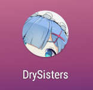
マスク層が異なる図形を切り抜くことができ、例えばサンプルの円形だ：Adaptive Iconsこのような遊び方のほかにも
2.難読化
、例えば2つのレイヤーが異なるスライド速度を採用する場合：ProGuardネット上ではAndroid 8.0ではデスクトップを長押ししてアイコンの形を変更できると言われているが、8.0のエミュレータで試してみたが関連するオプションは見つからなかった。Pixel Launcherだという人もいるが、いくつかのバージョンをダウンロードしても見つからなかった。おそらく、いわゆる「実子」であるPixelシリーズ標準のLauncherでのみ変更できるのだろう。Nova Launcherと8.0のランチャーを比較しても違いがわかる：proguard-rules.pro詳細は公式サイトを参照：build.gradle理由が分かれば十分だ。気に入らなければファイルをすべて削除し、ic_launcher.png だけを残せばよい。minifyEnabledためにture2.難読化アプリを公開する前にコードを難読化しておくと、たとえ逆コンパイルされても読みにくくすることができる。AS自体はJavaを統合しており、圧縮・最適化・難読化のツールとして、難読化ルールファイルは次の通り：難読化ルールを有効にするには、変更し内のを変更すれば難読化を有効にできる。ProGuardは、〜できるだけでなくapp/build/outputs/mapping/releaseコードを難読化できるだけでなく、さらにアプリのサイズを減らすことができ、
、バイトコードレベルで最適化することで私たちのアプリをより速く動作させることができます！また、難読化後はデフォルトで
#指定压缩级别
-optimizationpasses 5
#不跳过非公共的库的类成员
-dontskipnonpubliclibraryclassmembers
#混淆时采用的算法
-optimizations !code/simplification/arithmetic,!field/*,!class/merging/*
#把混淆类中的方法名也混淆了
-useuniqueclassmembernames
#优化时允许访问并修改有修饰符的类和类的成员
-allowaccessmodification
#将文件来源重命名为“SourceFile”字符串
-renamesourcefileattribute SourceFile
#保留行号
-keepattributes SourceFile,LineNumberTable
#保持泛型
-keepattributes Signature
#保持所有实现 Serializable 接口的类成员
-keepclassmembers class * implements java.io.Serializable {
static final long serialVersionUID;
private static final java.io.ObjectStreamField[] serialPersistentFields;
private void writeObject(java.io.ObjectOutputStream);
private void readObject(java.io.ObjectInputStream);
java.lang.Object writeReplace();
java.lang.Object readResolve();
}
#Fragment不需要在AndroidManifest.xml中注册，需要额外保护下
-keep public class * extends android.support.v4.app.Fragment
-keep public class * extends android.app.Fragment
# 保持测试相关的代码
-dontnote junit.framework.**
-dontnote junit.runner.**
-dontwarn android.test.**
-dontwarn android.support.test.**
-dontwarn org.junit.**
下に生成される
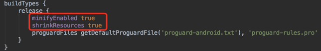
mapping.txt難読化ルール./gradlew buildファイル。このファイルに基づいて難読化前のコードに逆算できる；
また、難読化を避けるべき箇所もある。そうしないとアプリの実行時にエラーが発生する。
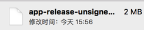
|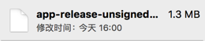
紙面の都合上、ここでは難読化のルールについては説明しない。興味があれば次のサイトへ：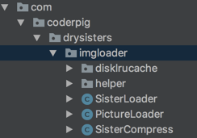
|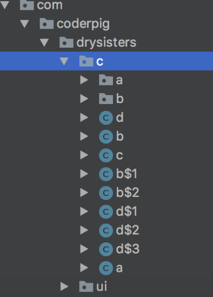
Android難読化入門から精通まで
3.署名パッケージング
そしてbuild.gradle内を修正して、難読化を有効にし、圧縮をオンにする：設定が完了したら、コマンドラインで一発実行する，これでAPKを生成できる。難読化前後の結果を比較してみよう：
|比較内容|難読化前|難読化後| |:-|:-|:-| |APKサイズ|
https://developer.android.com/studio/publish/app-signing.html#generate-key|：

|逆コンパイルコード|APKのサイズは小さくなり、逆コンパイルの難易度も上がった。嬉しい！3.署名パッケージングアプリ署名の重要性は言うまでもなく、
アプリの唯一の識別子Build -> Generate Signed APK

開発者の身分証明書

！これにより、ユーザーがインストール済みのアプリが悪意のある第三者によって上書きまたは置換されるのを防げる。このようなアプリをリバースエンジニアリングして再パッケージングする行為は、有料アプリやゲームアプリで非常に一般的だ。
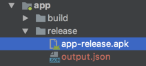
署名の生成とパッケージングについては、公式ドキュメントに詳しい説明がある（VPN（いわゆる「梯子」）が必要かもしれません）：署名生成署名を生成したら、次は署名を使ってパッケージングする。パッケージング方法は2つある：my.jks1つはbuild.gradle手動パッケージング
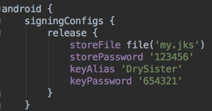

、もう1つは./gradlew clean buildGradleビルドによる自動パッケージング
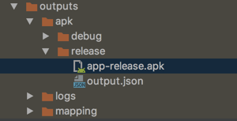
4.APKスリム化
そして生成されたAPKの保存先を選択する：
すると生成されたAPKを確認できる：APK Analyzerもう1つは
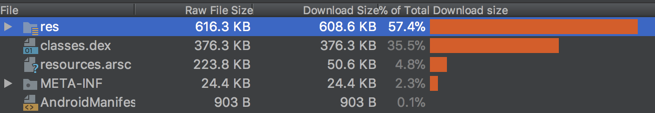
GradleコマンドラインでのビルドImageOptim

の方法だ。これも簡単で、GUIの方法は公式ドキュメントを参照してほしい。ここでは直接コードを貼る。通常、署名ファイルはプロジェクトに置かないが、ここではオープンソースなので、
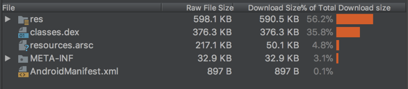
もプロジェクトに置いた。そして修正する
5.アプリ公開
コマンドラインで一発実行：コンパイルして実行し、コンパイル後、以下のディレクトリのapp-release.apkが正常に生成されたか確認する：4.APKスリム化難読化・署名・パッケージング後のAPKサイズは1.4MBだが、画像もほとんどなく、サードパーティ製ライブラリも使っていない画像閲覧アプリとしては、正直物足りない。だから私たちのAPKをスリム化する必要がある。Android Studio標準搭載の

は、私たちのAPKを定量的に分析できる：
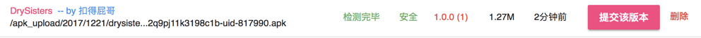
resが最も大きな割合を占めていることがわかる。原因はアイコンだ。画像やフォルダを削除するのはやめて、ツールで画像を圧縮するだけにする。ここで神ツールを紹介する：
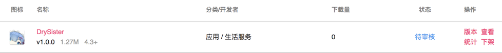
圧縮後、APKのサイズを見ると1.3MBになっていた。この時点で再度分析する：
大きな変化はないように感じるが、APKのサイズは確かに0.1MB減っている。画像リソースの圧縮はAPKスリム化の最も基本的な操作だ。他の最適化テクニックについては今後のバージョンで詳しく話す。プロジェクトが小さいため、最適化の余地はほとんどない…
git checkout master # 切换到master分支 git rebase develop # 合并develop分支 git push origin master # 推送到远程master分支 git tag v1.0.0 # 为当前commit打上TAG git push origin v1.0.0 # 把TAG推送到远程仓库
6.まとめ
なぜかと聞かないでくれDrySisterCoolapk市場
- 1.Gitだ。ガジェット好きの連中は基本的にみんなCoolapkに出入りしているよ~
- 2.HttpUrlConnection私たちのアプリを公開し、関連する説明情報を記入し、アプリのスクリーンショットをアップロードする；
- 3.AsyncTask，Handler続いて
- APKバージョンJson；
- をクリックして私たちのAPKをアップロードする。ここではAPKのパッケージ名が検証される。私は以前、間違えて書いたのに気づかず、後で修正してようやく通った；
- アップロード後は検査を待つ必要がある。検査を通過すれば提出できる。LruCacheとDiskLruCache公開後は審査を待つだけだ！
- 明日、管理者の審査が通過すれば、Coolapk上で私たちのアプリを見つけることができる！SQLite最後に、developブランチのコードをmasterにマージしよう。正式バージョンのときだけmasterにマージし、同時にTagを打つ。Tagを打つのは良い習慣だ。バージョンラインが長くなれば、この習慣がもたらす便利さが分かるだろう：
- 6.まとめLogこれでAndroid入門実戦のプロジェクト：
- の第一版が完了した。これまでの道のりを振り返って、私たちは何を学んだのだろうか？
- の使用、リモートリポジトリ、ブランチ管理のパターン；
- ネットワークリクエスト；
- の使用；APK Analyzer4.標準搭載のダサいJsonパーサーで解析ImageOptim
- 5.画像の2次キャッシュの流れ；
6.使用で簡単な画像キャッシュの小さなフレームワークを構築した；7.ネイティブデータベース
最後に、読者の皆様のこれまでのご支援とご同行に感謝申し上げます。ありがとうございます~

次版のアウトラインは計画中です。ご期待ください~
コードダウンロード：
https://github.com/coder-pig/DrySister/tree/developfollow、starを歓迎します。何か追加したい機能があれば、issuesを提出してください！